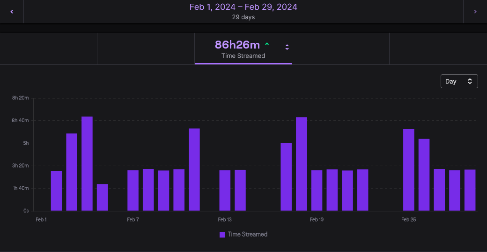
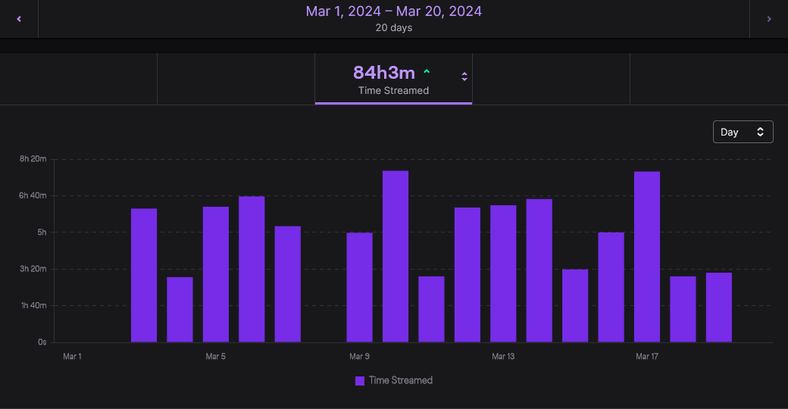

PAX (Again, but Seriously This Time)
It’s been just short of a year since the last PAX East, of which I promised … well, more than I gave, as what I ended up giving was nothing but silence for the better part of a year. It’s also been just short of two months since my last blog post, and I promised more of those as well.
So today I’m going to fix that.
Where I’ve been this time
So in the last post I talked in some depth about livestreaming and my intentions in that regard. Well … I fell down quite the rabbit hole. Not only did I massively underestimate the time it takes behind the scenes to plan for and set up each stream, I also … well … I’ll let the pictures speak louder than any words.


And that doesn’t even count in all of the prep time, nor the time I spend afterwards, making friends with the streamers I raid into.
… so … yeah, I’ve been busy.
PAX East
PAX East starts tomorrow, which I am very much looking forward to. And, like always, I intend on taking advantage of every moment of it to see new things, and to take copious notes of it all.
Unlike previous attempts to do a blog post each day, based on those notes, of which I only one year succeeded, this time I’m going to do something just a bit different. Now this wasn’t an option to me last year, as I hadn’t gotten back in to streaming yet, but this year I’ll be doing a mix of blogging and streaming.
Each day, after I get back to my lodgings, I’ll be running a short stream going over the games, panels, and events of the day. One advantage of this, I feel, is that it can be more dynamic, as questions may prompt details that may not have occurred to me to mention, as well as finding out what others are interested in seeing and hearing more about.
As for the blogging, I plan on doing just a single blog post. In the week after PAX, so I have the requisite time to do it right, I’ll assemble those notes into something significantly more organized than if I had broken it down by day, with the focus being more on the games than anything else. And, perhaps, I may do an extra, bonus post showing a bit of my raw notes, so you can see, or at least guess at, how much work is needed to turn it into the end result you’ll (hopefully) have read.
What about previous years?
After the summary post for PAX East 2024, as I find make the time, I intend to do a similar summary post for each previous PAX event, with a focus almost exclusively on the games, whether they are ones I saw or played myself or ones mentioned in one of the panels I attended. I may write a bit regarding a panel or few, but only if I find them notable, important, or informative enough to do so. I won’t make any promises to the timeframe, but I’ll make my best attempt to not take too long with it as I try not to neglect my other projects.
Also!
You may have noticed, or perhaps not, that there are a few new links on the navbar on the left. One is, of course, my Twitch account, where I’ve been streaming several times a week. One is a Discord, for those who want to chat when I’m not streaming, and where I put announcements for when I’ve a new stream, vid, or blog post. And the last is my Ko-fi, where anyone can donate to help me create more content.
Feel free to engage, or not, with any of these.